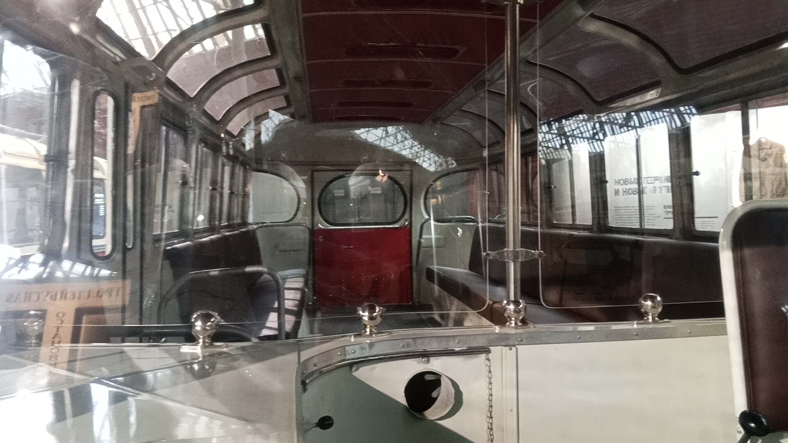
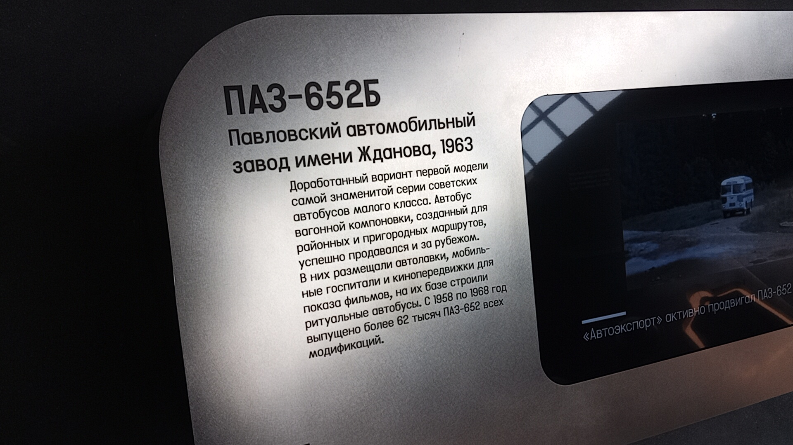

ПАЗ-652Б №3517
Перед вами музейный экспонат — автобус малого класса ПАЗ-652Б с бортовым номером 3517, выпущенный в 1968 году на Павловском автобусном заводе.
До того как стать частью коллекции Музея Транспорта Москвы, эта конкретная машина использовалась в качестве лаборатории в Московском автомобильно-дорожном институте (МАДИ).
Общая информация
| Параметр | Значение |
|---|---|
| Город | Москва 🇷🇺 |
| Транспортная компания | Музей Транспорта Москвы |
| Модель | ПАЗ-652Б |
| Бортовой № | 3517 |
| Госномер | 64-23 мнф |
| Год выпуска | 1968 |
| Поступил в музей | 2003 |
| Примечание | До музея — лаборатория в МАДИ |
| Текущее состояние | Памятник / Музейный |
Технические характеристики
Основные параметры
Длина: 7,15 м
Ширина: 2,4 м
Высота: 2,8 м
Сухая масса: 4340 кг
Конструкция
Кузов: сварной несущий
Сборка: панельная, крупноузловая
Двери: вакуумные механизмы
Агрегаты: от ГАЗ-51
История экспоната
Выпуск
Автобус с бортовым номером 3517 собран на Павловском автобусном заводе.
Работа в МАДИ
Использовался в качестве передвижной лаборатории в Московском автомобильно-дорожном институте.
Поступление в музей
Автобус передан в Музей наземного городского пассажирского транспорта (ГУП «Мосгортранс»).
4-й автобусный парк
Находился на площадке 4-го автобусного парка на Рижской.
Ольховская улица
Автобус зафиксирован на Ольховской улице (вероятно, в процессе перевозки или на временной стоянке).
Музей Транспорта Москвы
Экспонат представлен в постоянной экспозиции Музея Транспорта Москвы.
Особенности экспоната
Усиленная основа
На 652Б несущую основу кузова дополнили лонжеронами из швеллеров из-за раннего выхода из строя базовой версии.
Сохранность
Экспонат сохранился в оригинальном состоянии. Представлен в экспозиции музея с характерной исторической окраской.
Фотогалерея

📌 Музей Транспорта Москвы.
Общий вид автобуса.

📌 Музей Транспорта Москвы.
Интерьер салона.

📌 Музей Транспорта Москвы.
Музейная информация.
Нажмите на фото для увеличения
«Этот автобус прошел долгий путь от заводского конвейера и работы в МАДИ до статуса музейного экспоната. Теперь он — один из немногих сохранившихся свидетелей эпохи».